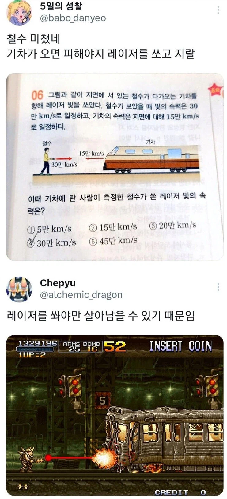

물리 문제인 줄 알았는데 생존 게임이었음
참고로 정답은 4번. 빛은 누가 재도 30만 km/s임

물리 문제인 줄 알았는데 생존 게임이었음
참고로 정답은 4번. 빛은 누가 재도 30만 km/s임
점마 단디도랏네 0.5광속에 기차질량을 가진 물체에 대고 레이저 쏘고앉았냐
0.5 광속이면 눈에 보이기나 할까? 인지하기 전에 이미 죽은 목숨이고
기차 같은 거대한 질량을 가진 물체가 0.5 광속까지 가속이 된다는 것도... ㅎㄷㄷ
그전에 기차가 공기중입자랑 핵반응,플라즈마화되면서 철수는 증발된다ㅋㅋㅋㅋ
그것은 기차의 형상을 한 무언가..
그동안의 철수 신체 스펙 보면 그리 놀랄 일도 아닌 듯
심지어 기차 속도가 광속의 절반 ㅋㅋ
헤비 머신건~
저 맵에서 레이져 다 쓰고 딱총으로 개길때 그 쫄깃함 아직도 잊지 못해 ㅋㅋㅋㅋㅋ
뤠이져
맨날 저 스테이지 가면 무기 총알 다떨어져서 권총으로 다다다다 때렷는데
15만키로달리는 기차에 탈수있는사람ㄷㄷ
한번에 순간가속하는거아니면 상관읍지
로켓빤쮸~
기차 씨발 존나 빠르네
초속 ㅋㅋㅋ
기차가 15만 키로로 달리고 있으면 은하철도999라도 되는건가
실제로 빛보다 빠른 속도는 불가능한거임? 아니면 가능한데 인간이 측정할 수 없는건가
빛의 속도도 불가능함. 질량이 0이어야 되니까 이론상 얘기할때나 가정하는거지.
이론 상으로도 불가능함.
얼핏 우주가 빛보다 빠른 속도로 팽창해서 우리가 관측한 나이보다 많니 어쩌니 얘기 들은 것 같아서
정보를 담고 있지않은 그림자 같은거나
공간은 빛보다 빠르게 움직일 수 있음
물질이나 에너지,정보가 빛보다 빠를 수 없다는 거
타키온이라는 가상입자가 있긴한데 어디까지나 가상
근데 저 문제의 의도는 뭐임? 걍 함정문제?
광속은 절대적이라는걸 배웠는지 안배웠는지 판별하는 문제.
함정문제가 아니라 특수 상대성 이론의 아주 기본적인 전제조건을 묻는 문제임
빛의 속도는 관측자의 상태에 상관없이 모든 상황에서 초속 30만km임
초속 15만km로 오는 기차면 쳐박히면 파편이 지구 밖까지 날아가겠네
철수를 구하시오
뭔소리임... 초속 15만km로 달려오는 기차를 피한다고 피할 수 있을 것 같음? 다 포기하고 죽기 전 마지막으로 개같음을 담아서 기관사 눈뽕이나 하는거임...
기차를 눈으로 보기도 전에 죽으니까 암것도못함
그랭 잘자
https://youtu.be/uNqKBiY6qCA?si=aNTsy4wzHXjMksGA
15만km/s 기차를 어케 피하냐고
철수가 아니라 에리였네